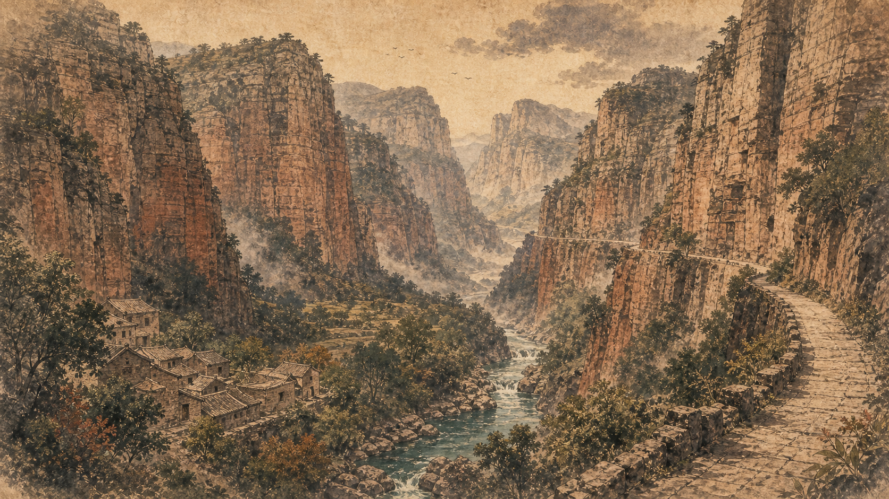
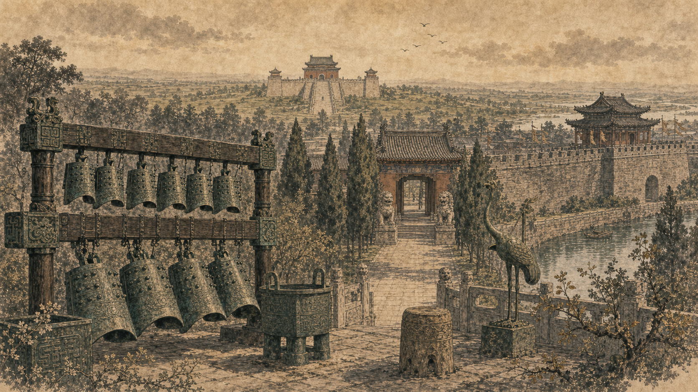
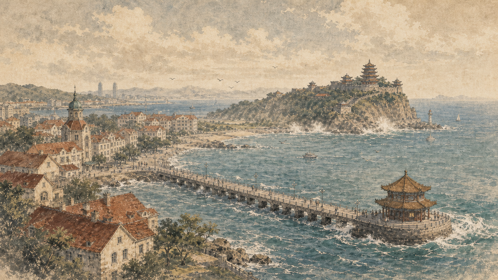
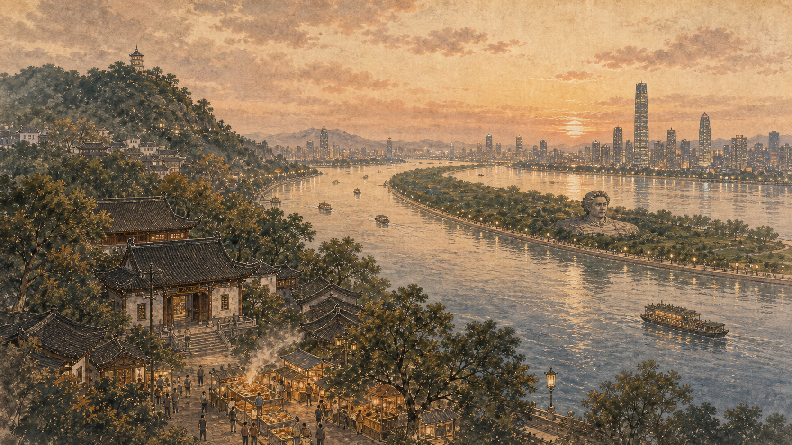
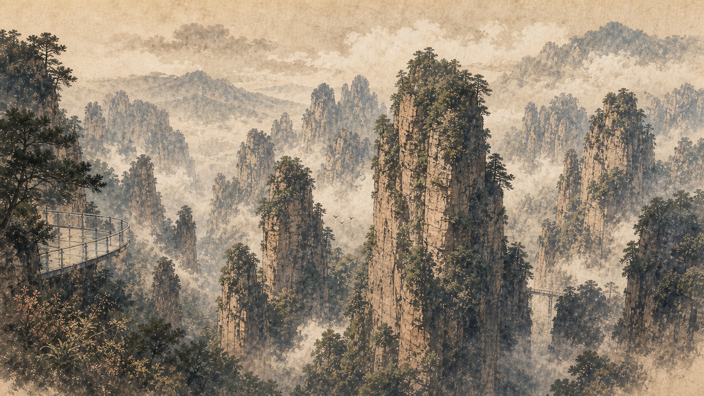

旅行足迹
累计点亮 44 座城市
从呼和浩特出发，把山川、古城、夜市和列车窗外的光都收进足迹里。
2026年02月

2025年08月


2025年05月
2025年02月



2025年01月

2024年08月


补充城市 / 日期待补








没有找到匹配的城市。
旅行足迹
从呼和浩特出发，把山川、古城、夜市和列车窗外的光都收进足迹里。





没有找到匹配的城市。